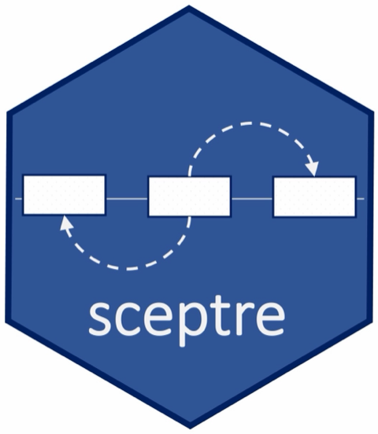

Narrow recheck of 169c16e
Source:vignettes/articles/contributor-tools-hardening-review-narrow-169c16e-recheck.Rmd
contributor-tools-hardening-review-narrow-169c16e-recheck.RmdContributing · Object model · Discovery walkthrough · Object fields
Supporting record: claims apply to the revisions and environments named below; this page does not qualify a later candidate.
Source: 169c16e4ba00c687c1f03fe37e9d79a11d01cd8f,
compared with the independently installed and collector-checked
8cbecfb88afdfbb3b45a991f63def7bcef8c8848 checkpoint.
Read-only review of the owner checkout; all generated files and probes
were confined to scratch.
P2: floor CI depends on an absent inventory file
tools/hardening/dependencies/probe-testthat-floor.R:4
reads tools/hardening/dependencies/testthat-apis.txt. The
exact commit does not track that file.
.github/workflows/check-support.yaml:34 runs the probe
after install, but neither the dependency-install script nor the
workflow runs inventory-testthat.R. A fresh checkout
therefore exits before reaching the floor behavior assertions and
package check.
The exact committed source was archived and extracted to
source/. Using genuine testthat 3.1.8 under R 4.4.1, the
first probe exited 1 with the missing-file error recorded in
clean-checkout-probe.log. Then, in scratch only, running
the committed inventory script before the same probe generated 2,028
unique syntactic call sites / 28 APIs and exited 0
(generated-inventory-probe.log). This establishes both the
clean-checkout failure and a narrow recovery. Commit the required
inventory or generate it deterministically before probing; retain the
feature assertions.
The archive is the immutable original committed source. The extracted
source/ now includes scratch-generated inventory outputs
from the recovery run.
Subsequent read-only observation: the owner working tree now adds
Rscript --vanilla tools/hardening/dependencies/inventory-testthat.R
immediately before the probe in the workflow. This matches the passing
scratch recovery and addresses the missing-file dependency at source
level. It is still uncommitted at HEAD 169c16e, so the exact-commit CI
finding is pending the next checkpoint rather than silently closed
against 169c16e.
Reviewed changes and positive evidence
- The sole production R diff is explicit
methods::slotNames(object)inanalysis_spec_is_empty; semantic validation is unchanged. - DESCRIPTION, NEWS, workflow, and the probe consistently use testthat
>= 3.1.8. The exact-floor probe passes all 28 inventoried exports
plus mocked imported
print, binding restoration, and the exercised expectation argument forms after inventory generation. - The installed probe runtime is R 4.4.1, aarch64 macOS, with testthat
3.1.8 from
/private/tmp/sceptre-r44-floor-library.probe-output/floor-probe-session.txtrecords it. This narrowly checks the dependency behavior; the installed sceptre package was supplied by the owner’s floor library and is not independently certified here as an installation of 169c16e. - The R 4.1 installer retains the optional-ondisc-absent lane and uses a coherent historical repository plus the exact 3.1.8 source archive. A script definition is not a hosted or local R 4.1 qualification receipt. No new optional-backend production change is present in this diff.
Scope and remaining work
The two collector findings remain independently verified fixed at installed 8cbecfb; the 12 focused checks were not rerun or relabeled as 169c16e. This recheck does not duplicate the owner’s full-suite, package build/check, R 4.1, container, or cross-repository qualification.
Pipeline source at review time remains
5e257b5a36a446471ca079683702c7f6fb976bd5. The previously
reproduced source-identity publication P2 remains open there. A fixed
pipeline commit is needed for an exact-source recheck before
closure.
Reproduction commands
Extract source-169c16e.tar into a fresh directory and
run from that root, using a fresh R process and the genuine private
floor library:
.libPaths(c("/private/tmp/sceptre-r44-floor-library", .libPaths()))
Sys.setenv(LC_ALL = "", SCEPTRE_DEPENDENCY_EVIDENCE = "/path/to/scratch-output")
source("tools/hardening/dependencies/probe-testthat-floor.R")For the recovery, run
source("tools/hardening/dependencies/inventory-testthat.R")
immediately before the probe. Runtime binary:
/Library/Frameworks/R.framework/Versions/4.4-arm64/Resources/bin/Rscript --vanilla.